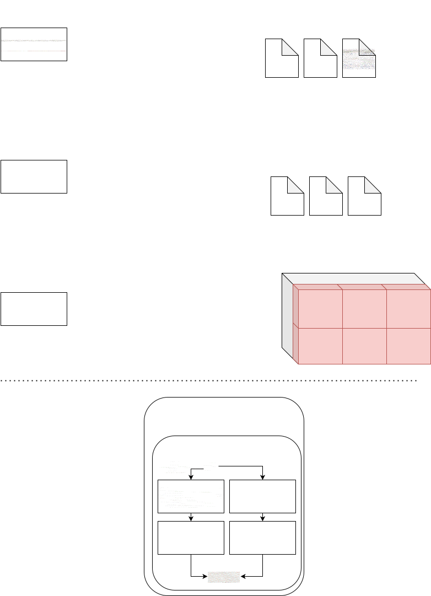

Datasets, Readers, and Related Data Structures
A dataset is composed of samples. Each sample is a collection of data units related to each other in some way. Typically, the task is to learn the relationships between these units of data.
Examples of Data Units, Samples, and Datasets
Image Classification:
Sample: A 2-element tuple consisting of an image of size CxHxW and a label (an integer from 0 to C-1, where C is the number of classes).
Image Segmentation:
Sample: A 2-element tuple consisting of an image of size CxHxW and a mask of the same size. The mask is a binary image with each pixel labeled with an integer from 0 to C-1.
Pixel-wise Regression:
Sample: A 2-element tuple consisting of an image of size CxHxW and a target of the same size. The target is a real-valued image with each pixel labeled with a real number.
Image Domain Adaptation:
Sample: A 3-element tuple consisting of an image of size CxHxW, a label (an integer from 0 to C-1), and a domain label (an integer from 0 to D-1, where D is the number of domains).
Unsupervised Image Domain Adaptation:
Sample: A 2-element tuple consisting of an image of size CxHxW and a domain label (an integer from 0 to D-1).
Image Reconstruction:
Sample: A single unit of data that is an image of size CxHxW.
Human Activity Recognition (HAR) using Inertial Sensors:
Sample: A 2-element tuple consisting of an n-dimensional array of time series of sensor readings and a label (an integer from 0 to C-1).
Dimensionality Reduction using HAR Datasets:
Sample: A single unit of data that is an n-dimensional array of time series of sensor readings.
In a map-style dataset, the dataset is considered a vector of samples, where each sample is a tuple of units of data. The dataset can be accessed by an index ranging from 0 to the length of the dataset.
We observe that many tasks have a similar sample structure: - 2-Element Tuple: Common in image classification, unsupervised image domain adaptation, and HAR using inertial sensors. The first element varies depending on the task (e.g., image, time series), while the second element is usually an integer label. Optionally, a third element can be added as an integer domain label. Image segmentation and Pixel-wise regression also use this structure, however with different data types (binary, real-valued). - Dimensionality Reduction and Image Reconstruction: Typically a single element that is the data.
How a Dataset Class Works
The Dataset class is responsible for: - Loading units of data from the storage device. - Transforming and preprocessing the units of data, separately or together. - Composing a sample from the units of data (usually a tuple but can be a single unit or a dictionary). - Returning the sample at index i from the dataset via the __getitem__ method, ensuring consistency (sample i must always be the same unless the dataset is modified).
To implement a new dataset, PyTorch suggests using an abstract class called torch.utils.data.Dataset, which defines a dataset mapping indices to samples and requires the implementation of two methods: __len__ and __getitem__. The __len__ method should return the size of the dataset, and the __getitem__ method should return the sample at index i.
Examples of Dataset Implementations
The implementation of a dataset mainly depends on the task and how the data is stored.
Task Definition: The task typically defines the sample structure (single-element, 2-element tuple, 3-element tuple, dictionary, etc.) and the units of data (image, time series, etc.). The model is designed to work with a specific sample structure.
Data Storage: Data can be stored in different formats (TIFF, CSV, PNG, JPG, numpy arrays, etc.) and organizations (single file, directory, list of files, list of directories, list of URLs, etc.).
Image Segmentation Example
Data Organization 1: - Structure: Images in a directory called images and masks in masks. Image images/1.tiff corresponds to mask masks/1.png. - Fetching Algorithm: 1. Load image from images/i.tiff. 2. Load mask from masks/i.png. 3. Apply transformations (e.g., convert mask to integer array, normalize image). 4. Return the tuple (image, mask).
Data Organization 2: - Structure: Images and masks in a single directory with TIFF files. Images prefixed with image_ and masks with mask_. Image image_1.tiff corresponds to mask mask_1.tiff. - Fetching Algorithm: 1. Load image from image_i.tiff. 2. Load mask from mask_i.tiff. 3. Apply transformations. 4. Return the tuple (image, mask).
Human Activity Recognition using Inertial Sensors Example
Data Organization 1: - Structure: Data in a CSV file with columns for sensor readings and label. - Fetching Algorithm: 1. Load the i-th row from the CSV file. 2. Extract sensor readings and label. 3. Apply transformations (e.g., normalize sensor readings). 4. Return the tuple (sensor_readings, label).
Data Organization 2: - Structure: Data in a directory with npy files for time-series readings and a label.csv file mapping series to labels. - Fetching Algorithm: 1. Load the i-th npy file. 2. Extract the label from label.csv. 3. Apply transformations. 4. Return the tuple (sensor_readings, label).
Pros and Cons
Use Case 1 of HAR: The dataset can make a single read of the
i-th row and extract sensor readings and label.Data Organization Changes: Every time the data organization changes, the dataset must be modified, even if the sample structure remains the same.
Our Solution: Readers
Readers are classes responsible for loading units of data in a predefined order. They load the i-th sample and extract the corresponding units of data (e.g., read the i-th row of a CSV file).
Datasets, in turn, query the reader for the units of data, transform and preprocess the data, compose the sample, and return the sample at index i.
By separating the responsibilities of loading data (Readers) and transforming/returning data (Datasets), we achieve a more flexible and generic implementation.
Key Definitions
Unit of Data: A single piece of data.
Reader: A class responsible for loading data units in a predefined order.
Sample: A collection of related data units.
Dataset: A collection of samples.
Dataset Class: Responsible for querying the reader, transforming/preprocessing data, and returning samples.
Data Module: A structured approach to handling different tasks and data organizations.
This structured approach ensures clarity and flexibility in handling different tasks and data organizations.
